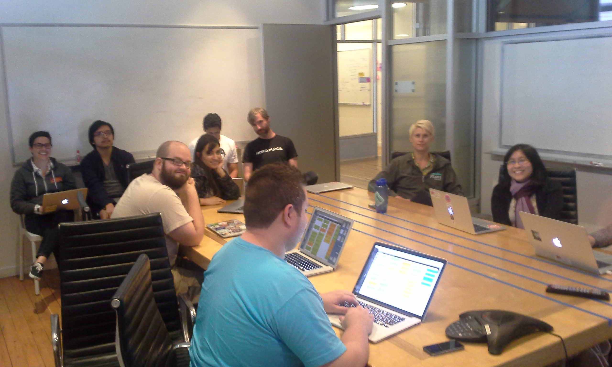
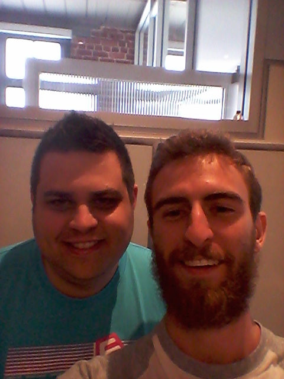

Junior Jump Extended is a program run by the folks at Carbon Five where we pair with Carbon Five employees to contribute to RailsBridges’ scheduling webapp called Bridge Troll. I heard about it from Katherine, a friend and co-officer from the Coders Club at City College, practically the day before the deadline to apply. “I don’t know Ruby [the programming language] or Rails, but I can learn it for this series,” I frantically typed into the application form, hoping to reassure both them and myself.

The application
Receiving the acceptance letter was a bit of a happy shock. I thought it was kind of a long shot applying for ostensibly selective volunteer opportunity and not knowing the language or framework we would be developing in. In my defense, I do have familiarity working with webapps in the similar-ish language Python thanks to a previous internship opportunity and my own desire to tinker with computer things.
Speaking to the people out there who are trying to snag their first volunteer or employment opportunity doing programming: Apply. 100% of the times you don’t apply, you don’t get the opportunity. Being honest is always a good policy, so don’t lie about what you can do, but do find a place on the application to share your efforts as you attempt to gain more experience programming. Hopefully your coordinator or employer will see the value in someone in teaching someone who is deeply interested in the material they are offering.
Preparing
So, now I had to learn Ruby and Ruby on Rails. I had a few weeks, so I took some time to peruse various options. I started with Learning Ruby The Hard Way since I <3 Zed Shaw and I learned Python from his similarly named series. I found it to be to be probably perfect for an absolute beginner, but not that great for someone already familiar with a few programming languages and styles. The hunt ended with Rubymonk which is an excellent set of free tutorials aimed at people already familiar with the basics programming. The real key is the embedded runnable code snippets and test-oriented practice problems that come with the tutorials. The embedded snippets not only allow you to see the output of code, but give one the important ability to modify the code to iron out any questions one has instantly. The test-oriented practice problems are about at the end of every lesson and test on subjects that came before the current chapter, plus material just covered in the lesson. These two features really helped me get a feel for and understanding of Ruby quickly. As for Ruby on Rails, I just ran through their latest Getting Started with Rails tutorial that’s advertised on the Rails website. I am familiar with Django and Flask, so most of the concepts that Rails has are familiar to me.
The first day
Of course, my first day at the Junior Jump meet up I arrived a bit late. After being let into the building and walking up a flight of stairs, I arrive to find a small group of people sitting around a table giving short introductions about themselves. A minute or so after I sit down at the table I am told its my turn to introduce myself. Taking the queue from the previous person, I answer the two ice-breaker type questions of who I am and what is my favorite food with “I am a human, and I like tofurkey.” The leader of the introduction circle jumps in to clarify that I am a Junior Jump volunteer and we eventually move into a meeting room with a giant screen.
While I am listening to the wonderful Lillie Chillen, one of the folks from RailsBridge, I infer more about the structure of the day and people around me. Two people from RailsBridge who are involved with Bridge Troll are here to answer any questions, half the people are mentors from Carbon Five and will be pairing with the other half of the group who are volunteers (“Juniors”). Lillie gives us an excellent and humor filled intro to the Rails Bridge project and has even setup a separate section on their project management tool just for beginner friendly coding tasks for us. By the end of our time in the meeting room, I am paired with my mentor, Marc.

Marc and I went to our spot in the office and ended up talking for probably an hour straight about all sorts of topics ranging from programming to making espresso. I felt like we were bonding almost too well, for by the time one of the people from RailsBridge came around to ask us if we had any questions, we realized we had not even started!
Learnings and highlights
In my own freelancing experience doing web related tech work it is often difficult to have a common language with a client. One interesting idea I learned from Marc was the usefulness of a numeric scale to rate the complexity of a problem. Regardless of whether or not the client is technically minded, a point scale gives both the client and a company just such a common language to express how difficult a problem should be. If the client or a fellow developer think a problem is a 0 and you think a problem is a 5, then it is obvious that there is miscommunication about some aspect of the task. A point scale also drives conversations both internally among developers and externally with clients about the necessary steps that must be taken to finish a project. If on a Fibonacci scale (0,1,2,3,5,8) a problem is determined to be an 8, then its a good indicator that the problem is too large and must be shrunk down to smaller sub-problems. Finally, in Marc’s experience, it is much easier to assign a problem a difficulty rating rather than a time estimate. Points also have the additional advantage over time estimates in that they can be added up. Members of a project can see how many points they can typically finish in a given week, and assign themselves tasks in the future accordingly.
Getting to work with Marc and having Lillie there to answer any of our questions made contributing code to my first open source project surprisingly easy. The tools being used are all modern, my questions get answered in seconds instead of frustrating hours or days of waiting for a reply on a forum and the free lunch does not hurt!
One of the greatest bits about this type of opportunity is getting to know the other people who obviously have some of the same interests and passions as you do. Lunch was a great opportunity to meet everyone, though I only ended up talking with a few people. The group size is small so its easy to get to talk with everyone, I just was finding myself engrossed in the conversations I was in!
So far super psyched on contributing to a project with a bunch of talented and interesting people. I also used Bridge Troll this last semester when organizing the Open Hatch event, so I have a bit of extra attachment to this project. I’m hoping to show up to the next meeting with my tasks completed so I can start cracking on some of the features I wished I had when I was planning that event.